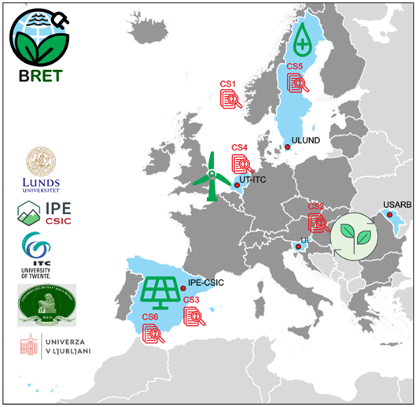
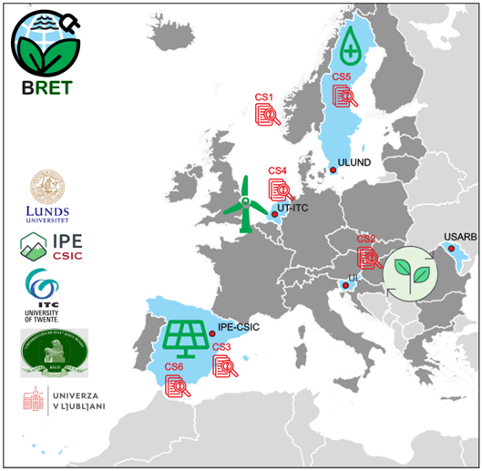

BRET Case Studies
BRET will conduct six case studies across Europe, covering offshore wind, bioenergy, solar parks, onshore wind, hydropower, and biodiversity valuation in Spain.
BRET will conduct six case studies across Europe, covering offshore wind, bioenergy, solar parks, onshore wind, hydropower, and biodiversity valuation in Spain.
